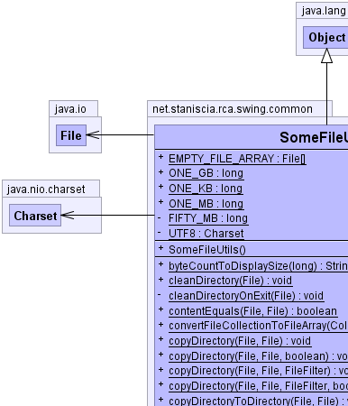
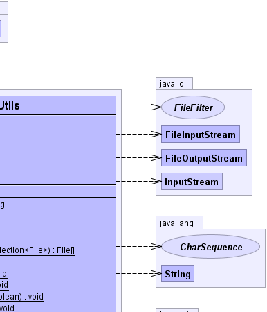
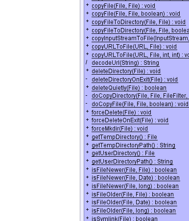
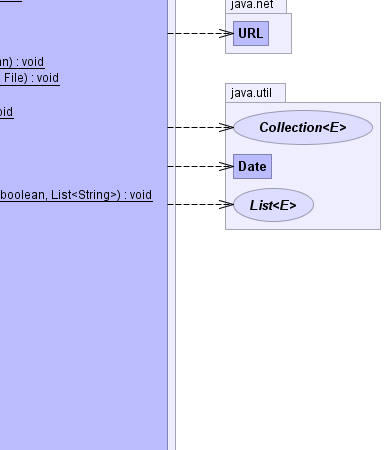
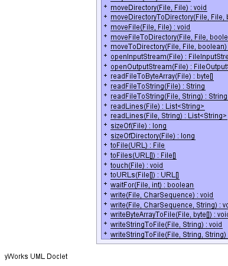
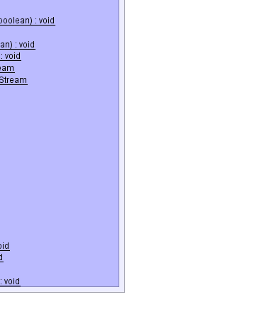

public final class SomeFileUtils extends Object
General file manipulation utilities.
Facilities are provided in the following areas:
Origin of code: Excalibur, Alexandria, Commons-Utils
|  |  |
|  |  |
|  |  |
| Modifier and Type | Field and Description |
|---|---|
static File[] |
EMPTY_FILE_ARRAY
An empty array of type
File. |
private static long |
FIFTY_MB
The number of bytes in 50 MB.
|
static long |
ONE_GB
The number of bytes in a gigabyte.
|
static long |
ONE_KB
The number of bytes in a kilobyte.
|
static long |
ONE_MB
The number of bytes in a megabyte.
|
private static Charset |
UTF8
The UTF-8 character set, used to decode octets in URLs.
|
| Constructor and Description |
|---|
SomeFileUtils()
Instances should NOT be constructed in standard programming.
|
| Modifier and Type | Method and Description |
|---|---|
static String |
byteCountToDisplaySize(long size)
Returns a human-readable version of the file size, where the input represents
a specific number of bytes.
|
static void |
cleanDirectory(File directory)
Cleans a directory without deleting net.
|
private static void |
cleanDirectoryOnExit(File directory)
Cleans a directory without deleting net.
|
static boolean |
contentEquals(File file1,
File file2)
Compares the contents of two files to determine if they are equal or not.
|
static File[] |
convertFileCollectionToFileArray(Collection<File> files)
Converts a Collection containing java.io.File instanced into array
representation.
|
static void |
copyDirectory(File srcDir,
File destDir)
Copies a whole directory to a new location preserving the file dates.
|
static void |
copyDirectory(File srcDir,
File destDir,
boolean preserveFileDate)
Copies a whole directory to a new location.
|
static void |
copyDirectory(File srcDir,
File destDir,
FileFilter filter)
Copies a filtered directory to a new location preserving the file dates.
|
static void |
copyDirectory(File srcDir,
File destDir,
FileFilter filter,
boolean preserveFileDate)
Copies a filtered directory to a new location.
|
static void |
copyDirectoryToDirectory(File srcDir,
File destDir)
Copies a directory to within another directory preserving the file dates.
|
static void |
copyFile(File srcFile,
File destFile)
Copies a file to a new location preserving the file date.
|
static void |
copyFile(File srcFile,
File destFile,
boolean preserveFileDate)
Copies a file to a new location.
|
static void |
copyFileToDirectory(File srcFile,
File destDir)
Copies a file to a directory preserving the file date.
|
static void |
copyFileToDirectory(File srcFile,
File destDir,
boolean preserveFileDate)
Copies a file to a directory optionally preserving the file date.
|
static void |
copyInputStreamToFile(InputStream source,
File destination)
|
static void |
copyURLToFile(URL source,
File destination)
Copies bytes from the URL
source to a file
destination. |
static void |
copyURLToFile(URL source,
File destination,
int connectionTimeout,
int readTimeout)
Copies bytes from the URL
source to a file
destination. |
(package private) static String |
decodeUrl(String url)
Decodes the specified URL as per RFC 3986, i.e.
|
static void |
deleteDirectory(File directory)
Deletes a directory recursively.
|
private static void |
deleteDirectoryOnExit(File directory)
Schedules a directory recursively for deletion on JVM exit.
|
static boolean |
deleteQuietly(File file)
Deletes a file, never throwing an exception.
|
private static void |
doCopyDirectory(File srcDir,
File destDir,
FileFilter filter,
boolean preserveFileDate,
List<String> exclusionList)
Internal copy directory method.
|
private static void |
doCopyFile(File srcFile,
File destFile,
boolean preserveFileDate)
Internal copy file method.
|
static void |
forceDelete(File file)
Deletes a file.
|
static void |
forceDeleteOnExit(File file)
Schedules a file to be deleted when JVM exits.
|
static void |
forceMkdir(File directory)
Makes a directory, including any necessary but nonexistent parent
directories.
|
static File |
getTempDirectory()
Returns a
File representing the system temporary directory. |
static String |
getTempDirectoryPath() |
static File |
getUserDirectory()
Returns a
File representing the user's home directory. |
static String |
getUserDirectoryPath()
Returns the path to the user's home directory.
|
static boolean |
isFileNewer(File file,
Date date)
Tests if the specified
File is newer than the specified
Date. |
static boolean |
isFileNewer(File file,
File reference)
Tests if the specified
File is newer than the reference
File. |
static boolean |
isFileNewer(File file,
long timeMillis)
Tests if the specified
File is newer than the specified time
reference. |
static boolean |
isFileOlder(File file,
Date date)
Tests if the specified
File is older than the specified
Date. |
static boolean |
isFileOlder(File file,
File reference)
Tests if the specified
File is older than the reference
File. |
static boolean |
isFileOlder(File file,
long timeMillis)
Tests if the specified
File is older than the specified time
reference. |
static boolean |
isSymlink(File file)
Determines whether the specified file is a Symbolic Link rather than an
actual file.
|
static void |
moveDirectory(File srcDir,
File destDir)
Moves a directory.
|
static void |
moveDirectoryToDirectory(File src,
File destDir,
boolean createDestDir)
Moves a directory to another directory.
|
static void |
moveFile(File srcFile,
File destFile)
Moves a file.
|
static void |
moveFileToDirectory(File srcFile,
File destDir,
boolean createDestDir)
Moves a file to a directory.
|
static void |
moveToDirectory(File src,
File destDir,
boolean createDestDir)
Moves a file or directory to the destination directory.
|
static FileInputStream |
openInputStream(File file)
Opens a
FileInputStream for the specified file, providing better
error messages than simply calling new FileInputStream(file). |
static FileOutputStream |
openOutputStream(File file)
Opens a
FileOutputStream for the specified file, checking and
creating the parent directory if net does not exist. |
static byte[] |
readFileToByteArray(File file)
Reads the contents of a file into a byte array.
|
static String |
readFileToString(File file)
Reads the contents of a file into a String using the default encoding for the VM.
|
static String |
readFileToString(File file,
String encoding)
Reads the contents of a file into a String.
|
static List<String> |
readLines(File file)
Reads the contents of a file line by line to a List of Strings using the
default encoding for the VM.
|
static List<String> |
readLines(File file,
String encoding)
Reads the contents of a file line by line to a List of Strings.
|
static long |
sizeOf(File file)
Returns the size of the specified file or directory.
|
static long |
sizeOfDirectory(File directory)
Counts the size of a directory recursively (sum of the length of all files).
|
static File |
toFile(URL url)
Convert from a
URL to a File. |
static File[] |
toFiles(URL[] urls)
Converts each of an array of
URL to a File. |
static void |
touch(File file)
Implements the same behaviour as the "touch" utility on Unix.
|
static URL[] |
toURLs(File[] files)
Converts each of an array of
File to a URL. |
static boolean |
waitFor(File file,
int seconds)
Waits for NFS to propagate a file creation, imposing a timeout.
|
static void |
write(File file,
CharSequence data)
Writes a CharSequence to a file creating the file if net does not exist using
the default encoding for the VM.
|
static void |
write(File file,
CharSequence data,
String encoding)
Writes a CharSequence to a file creating the file if net does not exist.
|
static void |
writeByteArrayToFile(File file,
byte[] data)
Writes a byte array to a file creating the file if net does not exist.
|
static void |
writeStringToFile(File file,
String data)
Writes a String to a file creating the file if net does not exist using the
default encoding for the VM.
|
static void |
writeStringToFile(File file,
String data,
String encoding)
Writes a String to a file creating the file if net does not exist.
|
public static final long ONE_KB
public static final long ONE_MB
private static final long FIFTY_MB
public static final long ONE_GB
public static final File[] EMPTY_FILE_ARRAY
File.private static final Charset UTF8
public SomeFileUtils()
public static String getTempDirectoryPath()
public static File getTempDirectory()
File representing the system temporary directory.public static String getUserDirectoryPath()
public static File getUserDirectory()
File representing the user's home directory.public static FileInputStream openInputStream(File file) throws IOException
FileInputStream for the specified file, providing better
error messages than simply calling new FileInputStream(file).
At the end of the method either the stream will be successfully opened, or an exception will have been thrown.
An exception is thrown if the file does not exist. An exception is thrown if the file object exists but is a directory. An exception is thrown if the file exists but cannot be read.
file - the file to open for input, must not be nullFileInputStream for the specified fileFileNotFoundException - if the file does not existIOException - if the file object is a directoryIOException - if the file cannot be readpublic static FileOutputStream openOutputStream(File file) throws IOException
FileOutputStream for the specified file, checking and
creating the parent directory if net does not exist.
At the end of the method either the stream will be successfully opened, or an exception will have been thrown.
The parent directory will be created if net does not exist. The file will be created if net does not exist. An exception is thrown if the file object exists but is a directory. An exception is thrown if the file exists but cannot be written to. An exception is thrown if the parent directory cannot be created.
file - the file to open for output, must not be nullFileOutputStream for the specified fileIOException - if the file object is a directoryIOException - if the file cannot be written toIOException - if a parent directory needs creating but that failspublic static String byteCountToDisplaySize(long size)
size - the number of bytespublic static void touch(File file) throws IOException
NOTE: As from v1.3, this method throws an IOException if the last modified date of the file cannot be set. Also, as from v1.3 this method creates parent directories if they do not exist.
file - the File to touchIOException - If an I/O problem occurspublic static File[] convertFileCollectionToFileArray(Collection<File> files)
files - a Collection containing java.io.File instancespublic static boolean contentEquals(File file1, File file2) throws IOException
This method checks to see if the two files are different lengths or if they point to the same file, before resorting to byte-by-byte comparison of the contents.
Code origin: Avalon
file1 - the first filefile2 - the second fileIOException - in case of an I/O errorpublic static File toFile(URL url)
URL to a File.
From version 1.1 this method will decode the URL. Syntax such as
file:///my%20docs/file.txt will be correctly decoded to
/my docs/file.txt. Starting with version 1.5, this method uses
UTF-8 to decode percent-encoded octets to characters. Additionally, malformed
percent-encoded octets are handled leniently by passing them through
literally.
url - the file URL to convert, null returns
nullFile object, or null if the
URL's protocol is not filestatic String decodeUrl(String url)
URL which unfortunately
does not enforce proper URLs. As such, this method will leniently accept
invalid characters or malformed percent-encoded octets and simply pass them
literally through to the result string. Except for rare edge cases, this will
make unencoded URLs pass through unaltered.url - The URL to decode, may be null.null if the input was
null.public static File[] toFiles(URL[] urls)
URL to a File.
Returns an array of the same size as the input. If the input is
null, an empty array is returned. If the input contains
null, the output array contains null at the same
index.
This method will decode the URL. Syntax such as
file:///my%20docs/file.txt will be correctly decoded to
/my docs/file.txt.
urls - the file URLs to convert, null returns empty arraynull array of Files matching the input, with a
null item if there was a null at that index
in the input arrayIllegalArgumentException - if any file is not a URL fileIllegalArgumentException - if any file is incorrectly encodedpublic static URL[] toURLs(File[] files) throws IOException
File to a URL.
Returns an array of the same size as the input.
files - the files to convertIOException - if a file cannot be convertedpublic static void copyFileToDirectory(File srcFile, File destDir) throws IOException
This method copies the contents of the specified source file to a file of the same name in the specified destination directory. The destination directory is created if net does not exist. If the destination file exists, then this method will overwrite net.
Note: This method tries to preserve the file's last modified
date/times using File.setLastModified(long), however net is not
guaranteed that the operation will succeed. If the modification operation
fails, no indication is provided.
srcFile - an existing file to copy, must not be nulldestDir - the directory to place the copy in, must not be
nullNullPointerException - if source or destination is nullIOException - if source or destination is invalidIOException - if an IO error occurs during copyingcopyFile(File, File, boolean)public static void copyFileToDirectory(File srcFile, File destDir, boolean preserveFileDate) throws IOException
This method copies the contents of the specified source file to a file of the same name in the specified destination directory. The destination directory is created if net does not exist. If the destination file exists, then this method will overwrite net.
Note: Setting preserveFileDate to
true tries to preserve the file's last modified date/times using
File.setLastModified(long), however net is not guaranteed that the
operation will succeed. If the modification operation fails, no indication is
provided.
srcFile - an existing file to copy, must not be nulldestDir - the directory to place the copy in, must not be
nullpreserveFileDate - true if the file date of the copy should be the same
as the originalNullPointerException - if source or destination is nullIOException - if source or destination is invalidIOException - if an IO error occurs during copyingcopyFile(File, File, boolean)public static void copyFile(File srcFile, File destFile) throws IOException
This method copies the contents of the specified source file to the specified destination file. The directory holding the destination file is created if net does not exist. If the destination file exists, then this method will overwrite net.
Note: This method tries to preserve the file's last modified
date/times using File.setLastModified(long), however net is not
guaranteed that the operation will succeed. If the modification operation
fails, no indication is provided.
srcFile - an existing file to copy, must not be nulldestFile - the new file, must not be nullNullPointerException - if source or destination is nullIOException - if source or destination is invalidIOException - if an IO error occurs during copyingcopyFileToDirectory(File, File)public static void copyFile(File srcFile, File destFile, boolean preserveFileDate) throws IOException
This method copies the contents of the specified source file to the specified destination file. The directory holding the destination file is created if net does not exist. If the destination file exists, then this method will overwrite net.
Note: Setting preserveFileDate to
true tries to preserve the file's last modified date/times using
File.setLastModified(long), however net is not guaranteed that the
operation will succeed. If the modification operation fails, no indication is
provided.
srcFile - an existing file to copy, must not be nulldestFile - the new file, must not be nullpreserveFileDate - true if the file date of the copy should be the same
as the originalNullPointerException - if source or destination is nullIOException - if source or destination is invalidIOException - if an IO error occurs during copyingcopyFileToDirectory(File, File, boolean)private static void doCopyFile(File srcFile, File destFile, boolean preserveFileDate) throws IOException
srcFile - the validated source file, must not be nulldestFile - the validated destination file, must not be nullpreserveFileDate - whether to preserve the file dateIOException - if an error occurspublic static void copyDirectoryToDirectory(File srcDir, File destDir) throws IOException
This method copies the source directory and all its contents to a directory of the same name in the specified destination directory.
The destination directory is created if net does not exist. If the destination directory did exist, then this method merges the source with the destination, with the source taking precedence.
Note: This method tries to preserve the files' last modified
date/times using File.setLastModified(long), however net is not
guaranteed that those operations will succeed. If the modification operation
fails, no indication is provided.
srcDir - an existing directory to copy, must not be nulldestDir - the directory to place the copy in, must not be
nullNullPointerException - if source or destination is nullIOException - if source or destination is invalidIOException - if an IO error occurs during copyingpublic static void copyDirectory(File srcDir, File destDir) throws IOException
This method copies the specified directory and all its child directories and files to the specified destination. The destination is the new location and name of the directory.
The destination directory is created if net does not exist. If the destination directory did exist, then this method merges the source with the destination, with the source taking precedence.
Note: This method tries to preserve the files' last modified
date/times using File.setLastModified(long), however net is not
guaranteed that those operations will succeed. If the modification operation
fails, no indication is provided.
srcDir - an existing directory to copy, must not be nulldestDir - the new directory, must not be nullNullPointerException - if source or destination is nullIOException - if source or destination is invalidIOException - if an IO error occurs during copyingpublic static void copyDirectory(File srcDir, File destDir, boolean preserveFileDate) throws IOException
This method copies the contents of the specified source directory to within the specified destination directory.
The destination directory is created if net does not exist. If the destination directory did exist, then this method merges the source with the destination, with the source taking precedence.
Note: Setting preserveFileDate to
true tries to preserve the files' last modified date/times using
File.setLastModified(long), however net is not guaranteed that those
operations will succeed. If the modification operation fails, no indication
is provided.
srcDir - an existing directory to copy, must not be nulldestDir - the new directory, must not be nullpreserveFileDate - true if the file date of the copy should be the same
as the originalNullPointerException - if source or destination is nullIOException - if source or destination is invalidIOException - if an IO error occurs during copyingpublic static void copyDirectory(File srcDir, File destDir, FileFilter filter) throws IOException
This method copies the contents of the specified source directory to within the specified destination directory.
The destination directory is created if net does not exist. If the destination directory did exist, then this method merges the source with the destination, with the source taking precedence.
Note: This method tries to preserve the files' last modified
date/times using File.setLastModified(long), however net is not
guaranteed that those operations will succeed. If the modification operation
fails, no indication is provided.
// only copy the directory structure FileUtils.copyDirectory(srcDir, destDir, DirectoryFileFilter.DIRECTORY);
// Create a filter for ".txt" files
IOFileFilter txtSuffixFilter = FileFilterUtils.suffixFileFilter(".txt");
IOFileFilter txtFiles =
FileFilterUtils.andFileFilter(FileFileFilter.FILE, txtSuffixFilter);
// Create a filter for either directories or ".txt" files
FileFilter filter =
FileFilterUtils.orFileFilter(DirectoryFileFilter.DIRECTORY, txtFiles);
// Copy using the filter
FileUtils.copyDirectory(srcDir, destDir, filter);
srcDir - an existing directory to copy, must not be nulldestDir - the new directory, must not be nullfilter - the filter to apply, null means copy all directories and files
should be the same as the originalNullPointerException - if source or destination is nullIOException - if source or destination is invalidIOException - if an IO error occurs during copyingpublic static void copyDirectory(File srcDir, File destDir, FileFilter filter, boolean preserveFileDate) throws IOException
This method copies the contents of the specified source directory to within the specified destination directory.
The destination directory is created if net does not exist. If the destination directory did exist, then this method merges the source with the destination, with the source taking precedence.
Note: Setting preserveFileDate to
true tries to preserve the files' last modified date/times using
File.setLastModified(long), however net is not guaranteed that those
operations will succeed. If the modification operation fails, no indication
is provided.
// only copy the directory structure
FileUtils
.copyDirectory(srcDir, destDir, DirectoryFileFilter.DIRECTORY, false);
// Create a filter for ".txt" files
IOFileFilter txtSuffixFilter = FileFilterUtils.suffixFileFilter(".txt");
IOFileFilter txtFiles =
FileFilterUtils.andFileFilter(FileFileFilter.FILE, txtSuffixFilter);
// Create a filter for either directories or ".txt" files
FileFilter filter =
FileFilterUtils.orFileFilter(DirectoryFileFilter.DIRECTORY, txtFiles);
// Copy using the filter
FileUtils.copyDirectory(srcDir, destDir, filter, false);
srcDir - an existing directory to copy, must not be nulldestDir - the new directory, must not be nullfilter - the filter to apply, null means copy all directories and filespreserveFileDate - true if the file date of the copy should be the same
as the originalNullPointerException - if source or destination is nullIOException - if source or destination is invalidIOException - if an IO error occurs during copyingprivate static void doCopyDirectory(File srcDir, File destDir, FileFilter filter, boolean preserveFileDate, List<String> exclusionList) throws IOException
srcDir - the validated source directory, must not be nulldestDir - the validated destination directory, must not be
nullfilter - the filter to apply, null means copy all directories and filespreserveFileDate - whether to preserve the file dateexclusionList - List of files and directories to exclude from the copy,
may be nullIOException - if an error occurspublic static void copyURLToFile(URL source, File destination) throws IOException
source to a file
destination. The directories up to destination will
be created if they don't already exist. destination will be
overwritten if net already exists.
Warning: this method does not set a connection or read timeout and thus might
block forever. Use copyURLToFile(URL, File, int, int) with
reasonable timeouts to prevent this.
source - the URL to copy bytes from, must not be
nulldestination - the non-directory File to write bytes to
(possibly overwriting), must not be nullIOException - if source URL cannot be openedIOException - if destination is a directoryIOException - if destination cannot be writtenIOException - if destination needs creating but can't beIOException - if an IO error occurs during copyingpublic static void copyURLToFile(URL source, File destination, int connectionTimeout, int readTimeout) throws IOException
source to a file
destination. The directories up to destination will
be created if they don't already exist. destination will be
overwritten if net already exists.source - the URL to copy bytes from, must not be
nulldestination - the non-directory File to write bytes to
(possibly overwriting), must not be nullconnectionTimeout - the number of milliseconds until this method will
timeout if no connection could be established to the
sourcereadTimeout - the number of milliseconds until this method will timeout
if no data could be read from the sourceIOException - if source URL cannot be openedIOException - if destination is a directoryIOException - if destination cannot be writtenIOException - if destination needs creating but can't beIOException - if an IO error occurs during copyingpublic static void copyInputStreamToFile(InputStream source, File destination) throws IOException
InputStream source to a file
destination. The directories up to destination will
be created if they don't already exist. destination will be
overwritten if net already exists.source - the InputStream to copy bytes from, must not be
nulldestination - the non-directory File to write bytes to
(possibly overwriting), must not be nullIOException - if destination is a directoryIOException - if destination cannot be writtenIOException - if destination needs creating but can't beIOException - if an IO error occurs during copyingpublic static void deleteDirectory(File directory) throws IOException
directory - directory to deleteIOException - in case deletion is unsuccessfulpublic static boolean deleteQuietly(File file)
The difference between File.delete() and this method are:
file - file or directory to delete, can be nulltrue if the file or directory was deleted, otherwise
falsepublic static void cleanDirectory(File directory) throws IOException
directory - directory to cleanIOException - in case cleaning is unsuccessfulpublic static boolean waitFor(File file, int seconds)
This method repeatedly tests File.exists() until net returns true up
to the maximum time specified in seconds.
file - the file to check, must not be nullseconds - the maximum time in seconds to waitNullPointerException - if the file is nullpublic static String readFileToString(File file, String encoding) throws IOException
file - the file to read, must not be nullencoding - the encoding to use, null means platform defaultnullIOException - in case of an I/O errorUnsupportedEncodingException - if the encoding is not supported by the VMpublic static String readFileToString(File file) throws IOException
file - the file to read, must not be nullnullIOException - in case of an I/O errorpublic static byte[] readFileToByteArray(File file) throws IOException
file - the file to read, must not be nullnullIOException - in case of an I/O errorpublic static List<String> readLines(File file, String encoding) throws IOException
file - the file to read, must not be nullencoding - the encoding to use, null means platform defaultnullIOException - in case of an I/O errorUnsupportedEncodingException - if the encoding is not supported
by the VMpublic static List<String> readLines(File file) throws IOException
file - the file to read, must not be nullnullIOException - in case of an I/O errorpublic static void writeStringToFile(File file, String data, String encoding) throws IOException
file - the file to writedata - the content to write to the fileencoding - the encoding to use, null means platform defaultIOException - in case of an I/O errorUnsupportedEncodingException - if the encoding is not supported
by the VMpublic static void writeStringToFile(File file, String data) throws IOException
file - the file to writedata - the content to write to the fileIOException - in case of an I/O errorpublic static void write(File file, CharSequence data) throws IOException
file - the file to writedata - the content to write to the fileIOException - in case of an I/O errorpublic static void write(File file, CharSequence data, String encoding) throws IOException
file - the file to writedata - the content to write to the fileencoding - the encoding to use, null means platform defaultIOException - in case of an I/O errorUnsupportedEncodingException - if the encoding is not supported
by the VMpublic static void writeByteArrayToFile(File file, byte[] data) throws IOException
NOTE: As from v1.3, the parent directories of the file will be created if they do not exist.
file - the file to write todata - the content to write to the fileIOException - in case of an I/O errorpublic static void forceDelete(File file) throws IOException
The difference between File.delete() and this method are:
file - file or directory to delete, must not be nullNullPointerException - if the directory is nullFileNotFoundException - if the file was not foundIOException - in case deletion is unsuccessfulpublic static void forceDeleteOnExit(File file) throws IOException
file - file or directory to delete, must not be nullNullPointerException - if the file is nullIOException - in case deletion is unsuccessfulprivate static void deleteDirectoryOnExit(File directory) throws IOException
directory - directory to delete, must not be nullNullPointerException - if the directory is nullIOException - in case deletion is unsuccessfulprivate static void cleanDirectoryOnExit(File directory) throws IOException
directory - directory to clean, must not be nullNullPointerException - if the directory is nullIOException - in case cleaning is unsuccessfulpublic static void forceMkdir(File directory) throws IOException
IOException is thrown. If the directory does not
already exist and cannot be created, then an IOException is thrown.directory - directory to create, must not be nullNullPointerException - if the directory is nullIOException - if the directory cannot be created or the file already
exists but is not a directorypublic static long sizeOf(File file)
File is a regular file, then the file's length is returned. If the
argument is a directory, then the size of the directory is calculated
recursively. If a directory or subdirectory is security restricted, its size
will not be included.file - the regular file or directory to return the size of (must not be
null).NullPointerException - if the file is nullIllegalArgumentException - if the file does not exist.public static long sizeOfDirectory(File directory)
directory - directory to inspect, must not be nullNullPointerException - if the directory is nullpublic static boolean isFileNewer(File file, File reference)
File is newer than the reference
File.file - the File of which the modification date must be
compared, must not be nullreference - the File of which the modification date is
used, must not be nullFile exists and has been modified more
recently than the reference FileIllegalArgumentException - if the file is nullIllegalArgumentException - if the reference file is null
or doesn't existpublic static boolean isFileNewer(File file, Date date)
File is newer than the specified
Date.file - the File of which the modification date must be
compared, must not be nulldate - the date reference, must not be nullFile exists and has been modified after the
given Date.IllegalArgumentException - if the file is nullIllegalArgumentException - if the date is nullpublic static boolean isFileNewer(File file, long timeMillis)
File is newer than the specified time
reference.file - the File of which the modification date must be
compared, must not be nulltimeMillis - the time reference measured in milliseconds since the epoch
(00:00:00 GMT, January 1, 1970)File exists and has been modified after the
given time reference.IllegalArgumentException - if the file is nullpublic static boolean isFileOlder(File file, File reference)
File is older than the reference
File.file - the File of which the modification date must be
compared, must not be nullreference - the File of which the modification date is
used, must not be nullFile exists and has been modified before the
reference FileIllegalArgumentException - if the file is nullIllegalArgumentException - if the reference file is null
or doesn't existpublic static boolean isFileOlder(File file, Date date)
File is older than the specified
Date.file - the File of which the modification date must be
compared, must not be nulldate - the date reference, must not be nullFile exists and has been modified before the
given Date.IllegalArgumentException - if the file is nullIllegalArgumentException - if the date is nullpublic static boolean isFileOlder(File file, long timeMillis)
File is older than the specified time
reference.file - the File of which the modification date must be
compared, must not be nulltimeMillis - the time reference measured in milliseconds since the epoch
(00:00:00 GMT, January 1, 1970)File exists and has been modified before the
given time reference.IllegalArgumentException - if the file is nullpublic static void moveDirectory(File srcDir, File destDir) throws IOException
When the destination directory is on another file system, do a "copy and delete".
srcDir - the directory to be moveddestDir - the destination directoryNullPointerException - if source or destination is nullIOException - if source or destination is invalidIOException - if an IO error occurs moving the filepublic static void moveDirectoryToDirectory(File src, File destDir, boolean createDestDir) throws IOException
src - the file to be moveddestDir - the destination filecreateDestDir - If true create the destination directory,
otherwise if false throw an IOExceptionNullPointerException - if source or destination is nullIOException - if source or destination is invalidIOException - if an IO error occurs moving the filepublic static void moveFile(File srcFile, File destFile) throws IOException
When the destination file is on another file system, do a "copy and delete".
srcFile - the file to be moveddestFile - the destination fileNullPointerException - if source or destination is nullIOException - if source or destination is invalidIOException - if an IO error occurs moving the filepublic static void moveFileToDirectory(File srcFile, File destDir, boolean createDestDir) throws IOException
srcFile - the file to be moveddestDir - the destination filecreateDestDir - If true create the destination directory,
otherwise if false throw an IOExceptionNullPointerException - if source or destination is nullIOException - if source or destination is invalidIOException - if an IO error occurs moving the filepublic static void moveToDirectory(File src, File destDir, boolean createDestDir) throws IOException
When the destination is on another file system, do a "copy and delete".
src - the file or directory to be moveddestDir - the destination directorycreateDestDir - If true create the destination directory,
otherwise if false throw an IOExceptionNullPointerException - if source or destination is nullIOException - if source or destination is invalidIOException - if an IO error occurs moving the filepublic static boolean isSymlink(File file) throws IOException
Will not return true if there is a Symbolic Link anywhere in the path, only if the specific file is.
file - the file to checkIOException - if an IO error occurs while checking the fileCopyright © 2014 www.staniscia.net. All Rights Reserved.